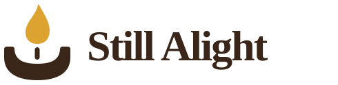
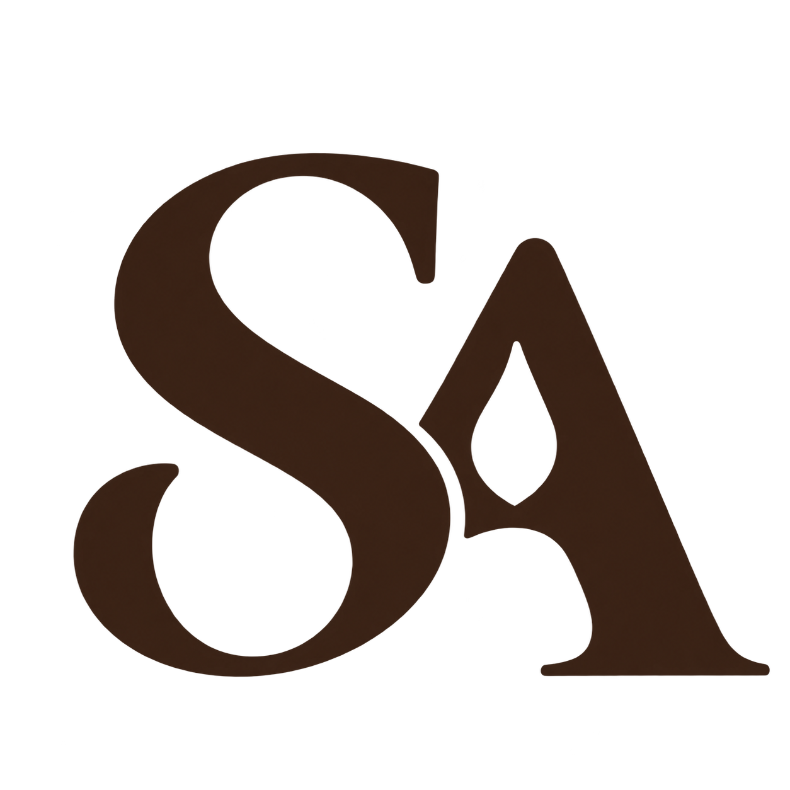
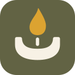

Still Alight / Brand library
A little light, made our own.
Quiet Flame is the main logo. The SA monogram is kept as a secondary mark.



Quiet Flame · Reversed
The light version used on the candlelit website.



SA · Secondary
Preserved for other uses, with a transparent background.



Quiet Flame · Small icon
The compact mark used for the website’s browser icon.